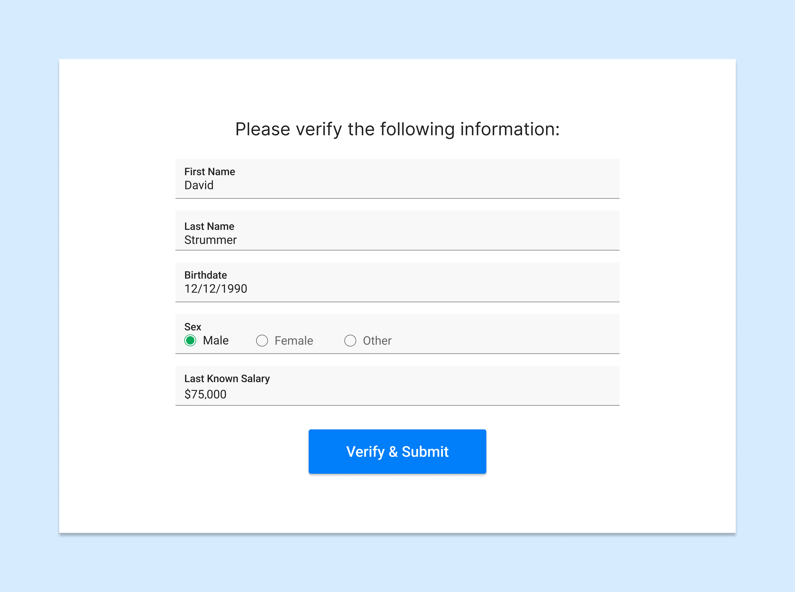
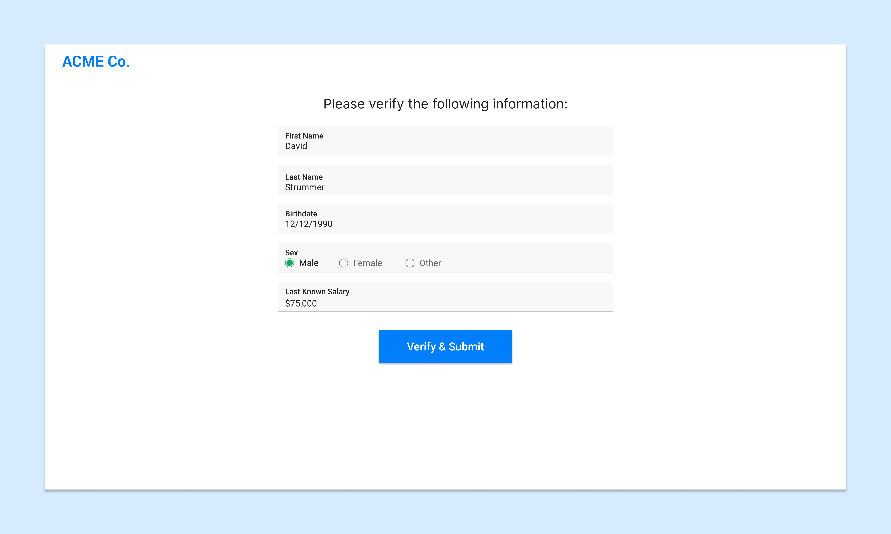
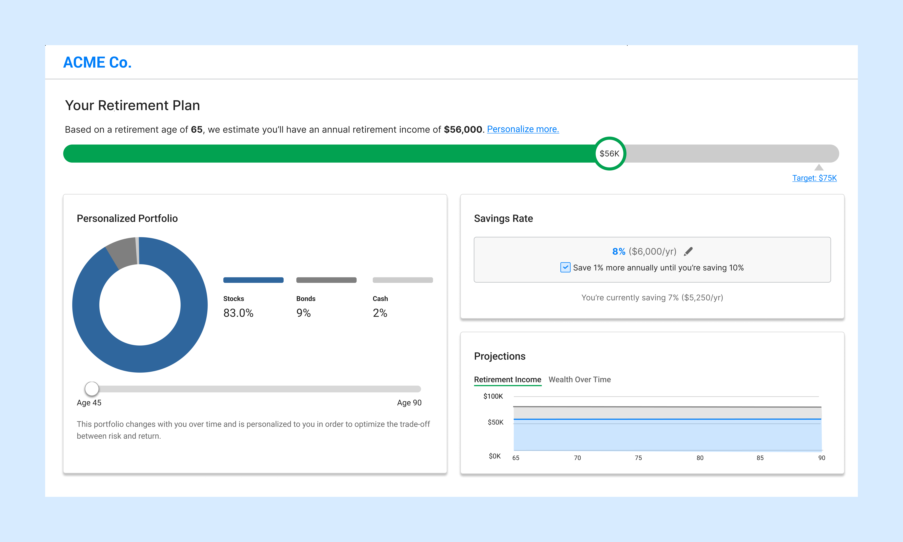

Shifting from B2B to B2B2C: An alternative experience for the novice user base

Context
For this project, I worked on the onboarding and dashboard designs with a team of two other designers, as well as leading the technical integrations with 401k plan providers. This was also the first introduction of user experience design into the product development process, requiring design evangelization to the org.
Key Insights
- Onboarding FlowExperts are not novices
- Black Box
- Key Levers
Solution
I led generative research to shape our design strategy for the new target audience and set up usability metrics to inform iterations as we started shipping our features. Novice users were overwhelmed by personalization options in the original interface and were satisfied by starting with some common defaults. Upon receiving advice, users needed more transparency to understand the logic behind recommended actions. Not only did we see an increase in users, we also saw better outcomes for our users, for a product-led growth strategy.
Results

